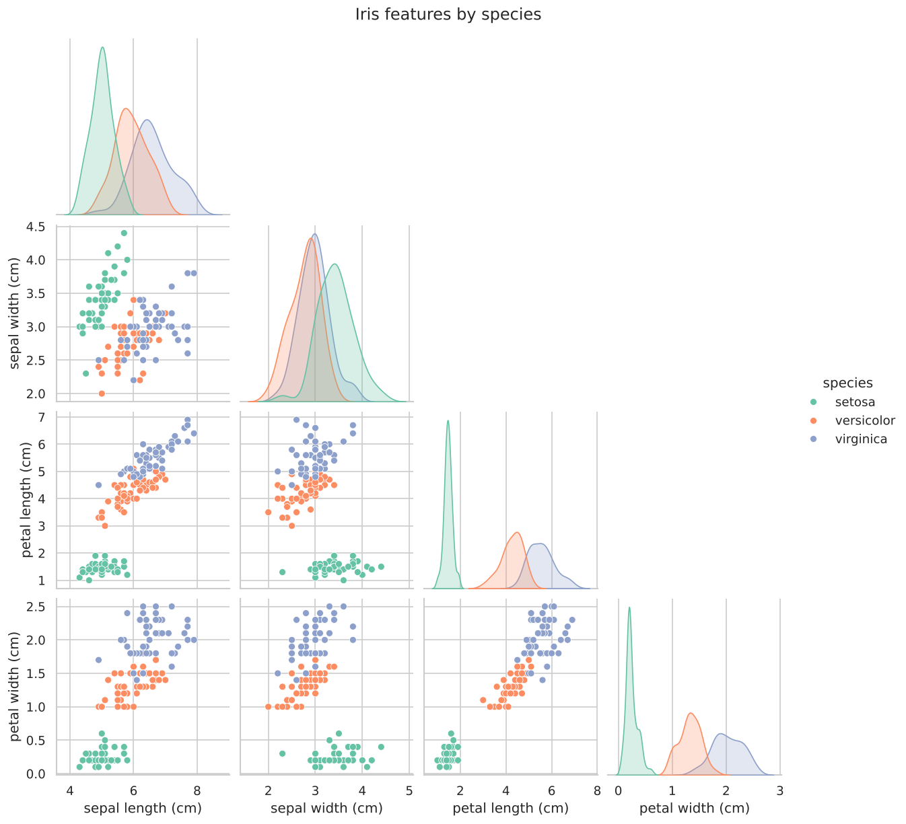
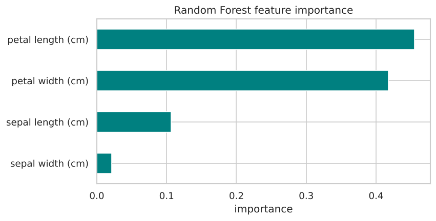
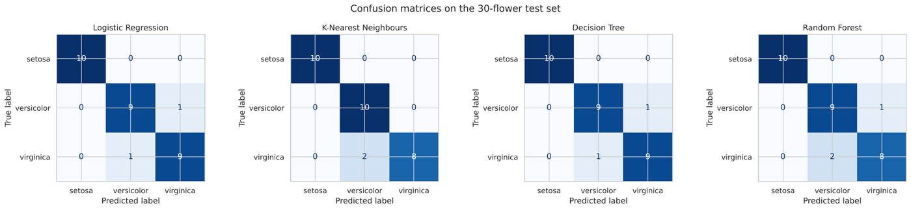
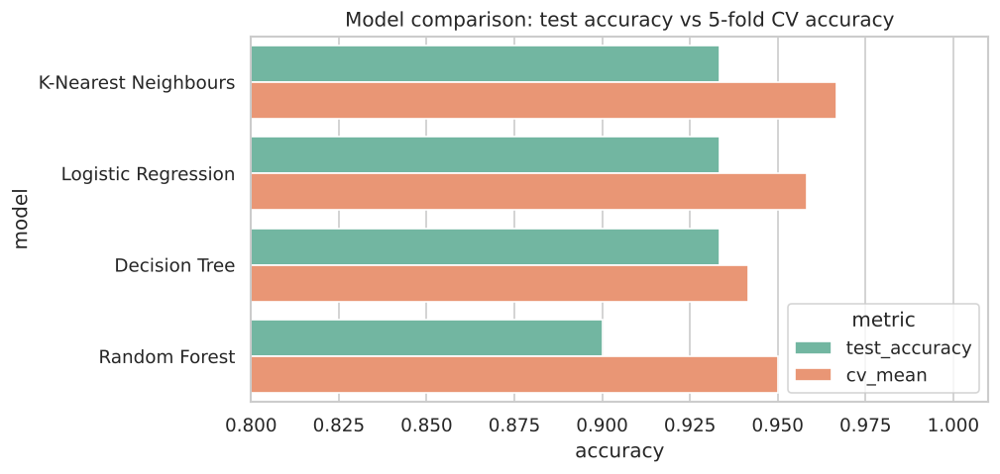
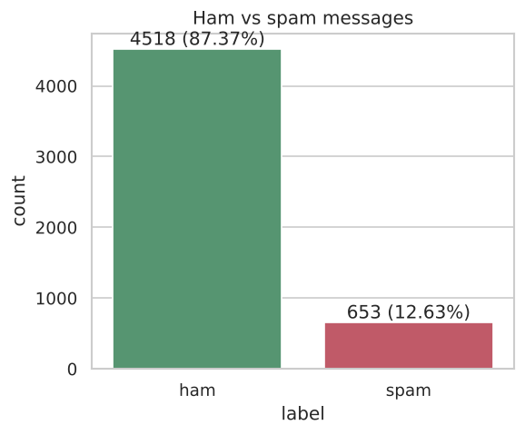
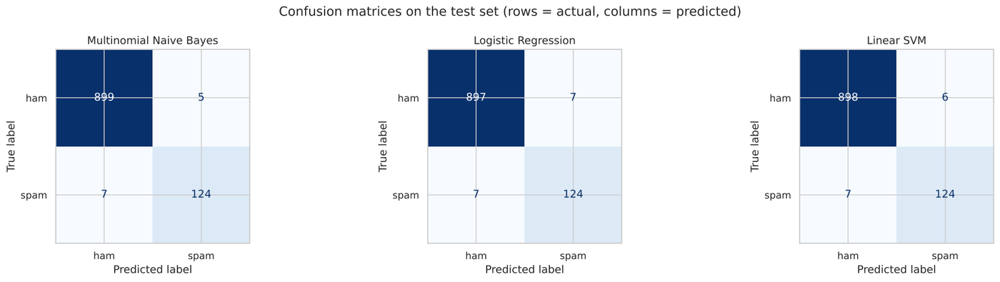
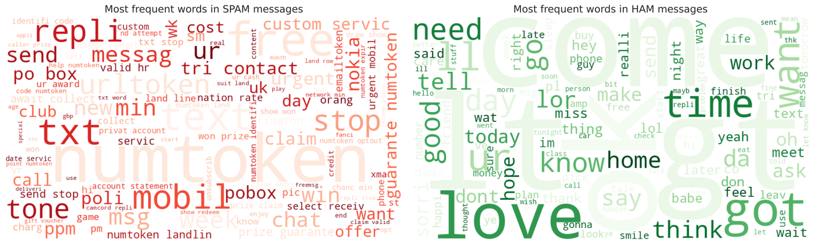
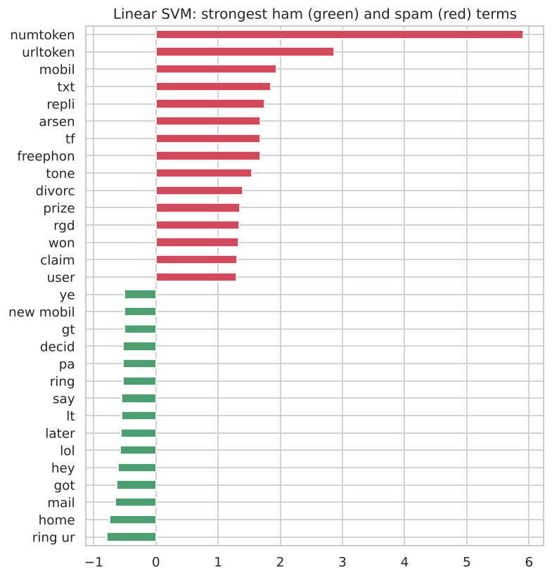

Oasis Infobyte Internship · Data Science track
Three machine learning projects you can try right here.
Built by Sadhanala Nischay Prasad. Every model below runs live in your browser, using the same parameters trained in the project notebooks.
Task 1 · Classification
Iris Flower Classification
Identifies an iris flower's species (setosa, versicolor or virginica) from four measurements. Four classifiers were compared; K-Nearest Neighbours won on cross-validation.
Try it: measure a flower
Predicted species
–
Your flower (black ring) among the 120 training flowers, by petal size. The model votes using the 5 nearest flowers across all four measurements.




Task 4 · Natural language processing
Email Spam Detection
Cleans each message, turns it into TF-IDF features and classifies it with Multinomial Naive Bayes, trained on 5,171 SMS messages. Recall matters here: every missed spam lands in someone's inbox.
Try it: is this message spam?
Verdict
–
Words driving the decision
The browser version uses the notebook's pipeline without word stemming so it can run in JavaScript; it scores 99.1% accuracy on the same test set.




Task 5 · Regression
Sales Prediction
Predicts product sales from TV, Radio and Newspaper ad spend across 200 markets. A degree-2 polynomial regression captures diminishing returns and the TV × Radio synergy that a straight line misses.
Try it: plan an ad budget
Predicted sales
– thousand units
Total budget: –